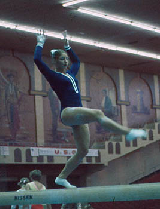

Debbie Willcox (USA)
1975 Pan American Games V Silver Medalist
1976 US V Champion

Debbie was born on September 16, 1959 and trained at the Littleton Flyers Gymnastics Club in Littleton, CO. She was coached by Ron Crescenti. Her favorite event was bars and her least favorite event was beam.
Competition Results
1973
AAU Jr. Olympic Nationals (junior division): 3rd AA
1974
USGF Jr. Nationals: 3rd AA
1975
2nd Elite Qualification Meet: 5th AA
Pan American Games: 1st Team, 4th AA, 2nd V
Pan American Games Trials: 5th AA
USGF Elite Championships: 8th AA, 4th UB, 6th V
1976
Mardi Gras Invitational: 3rd AA
Olympic Games: 6th Team, 18th AA
Sanlam Cup: 1st AA
US Championships: 3rd AA, 1st V, 3rd UB
US Olympic Trials: 4th AA
USA-CAN Dual Meet: 1st Team, 1st AA
USA-ROM Dual Meet: 2nd Team, 3rd AA
This page was created on June 25,
2005 and was last updated on December 17, 2006.
© Gymn Forum